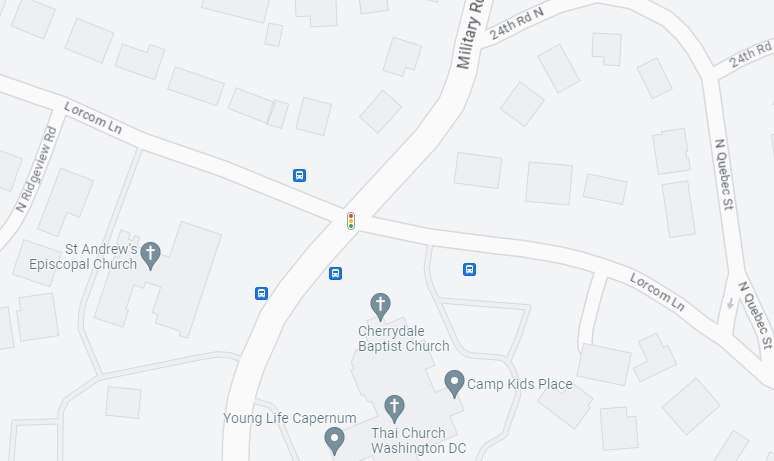
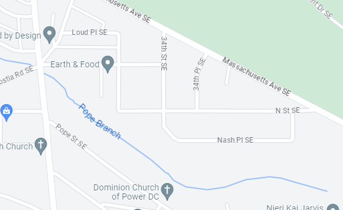
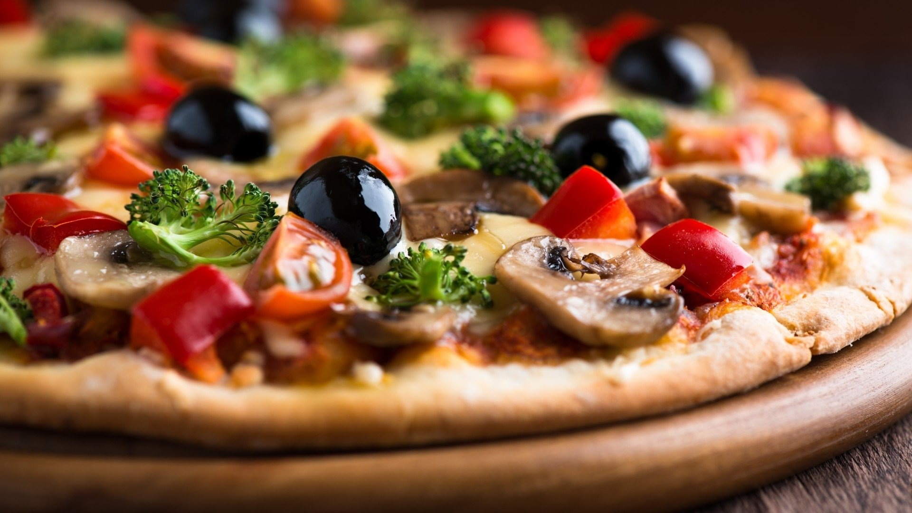

Elm Street
Maple Avenue
Bake and sell
Fancy a delicious handmade pizza fresh from the oven? Order a large 40cm pizza for work or home. We
deliver for free in Trutnov. Don't want to wait for delivery? Choose from the menu, call us with
your wishes and pick up your pizza on the square. The crispy delicacy according to the authentic Italian
recipe is already baking for
NEW: Pizza home
Are you planning a family celebration or a party for friends? Don't feel like cooking? Buy a frozen pizza at the branch. At home, just pop it in the oven for 3-5 minutes and you're good to go. The pre-baked pizza is smaller, but just as good! Will this yummy pizza last up to 2 months in the freezer or will you eat it sooner?Address:
123 Elm Street, Washington, DC 20001

Experience a unique spectacle! Professional pizza makers will prepare a large pizza more than 40cm high
right in front of your eyes. It will be a concert! Choose the classics or a combination inspired by the
diverse flavours of real mafiosi. We've personally tested them all, but only the best have earned the
right to be on our menu.
NEW: More pizza for later
You can now also order frozen pizza. It's just as good, just a little smaller to fit in your oven. If you don't eat it right away, it will keep in the freezer in top quality for up to 2 months. Get ready for a family get-together or a get-together with friends early.Address:
456 Maple Avenue, Seattle, WA 98101

You too can treat your customers to the pizzeria's renowned fresh handmade King Benny pizza. You don't
have to have a professional pizza maker on your team or a special oven in your shop. Italian recipe
dough, quality ingredients and the unique taste of stone baked pizza will all be there! We are the only
Czech manufacturer that prepares frozen pizzas by hand using the same process as in the shop. We just
don't bake them all the way through. The final step is up to you.
We leave nothing to chance. King Benny pizza must taste the same everywhere, every time. That's why the pre-baked pizzas are made by real pizzamasters from the owner families. And that they have to rotate! Up to 400 pizzas with a diameter of 30 cm are produced under their hands every day. Read on to find out what the secret to their delicious taste is.
We leave nothing to chance. King Benny pizza must taste the same everywhere, every time. That's why the pre-baked pizzas are made by real pizzamasters from the owner families. And that they have to rotate! Up to 400 pizzas with a diameter of 30 cm are produced under their hands every day. Read on to find out what the secret to their delicious taste is.
Our pre-baked pizza is a must-have?
Contact us! Together we will fine-tune the details of our cooperation.
